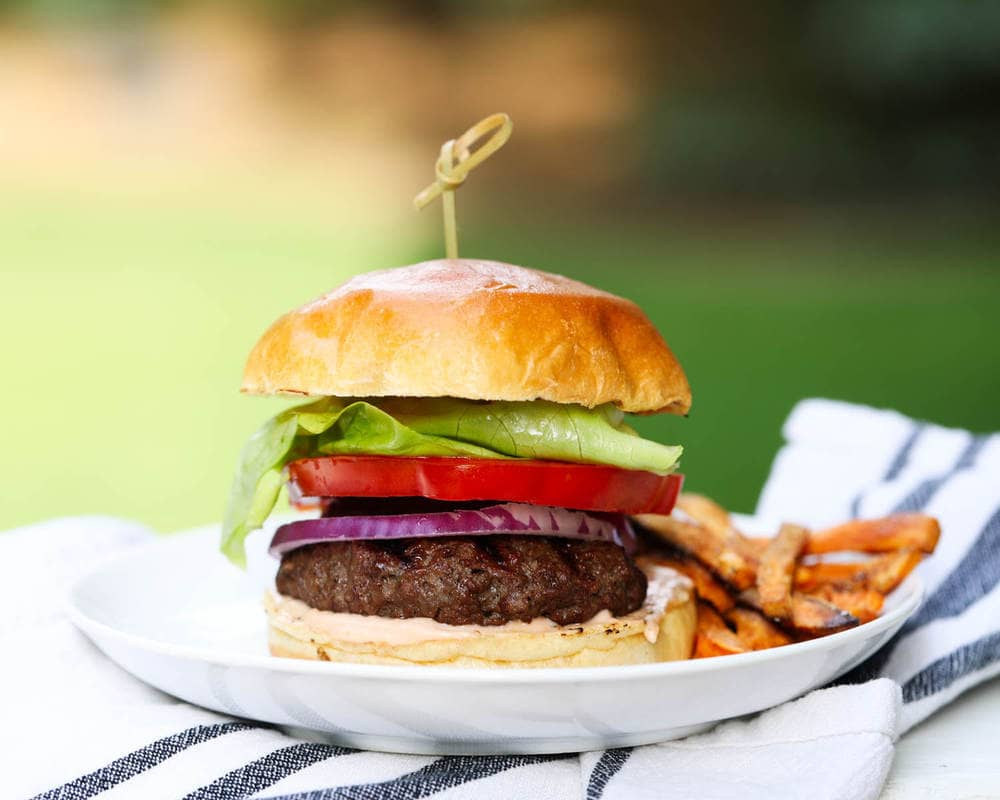

Hamburger

Description
A hamburger is a food consisting of fillings —usually a patty of
ground meat, typically beef—placed inside a sliced bun or bread roll.
- 2 pounds ground chuck
- 1/2 cup crushed saltine crackers
- 1 large egg
- 2 tablespoons Worcestershire sauce
- 2 tablespoons milk
- Many more items that I refuse to list
Steps
- Set out a large mixing bowl. Add in the ground beef, crushed
crackers, egg, Worcestershire sauce, milk, salt, garlic powder,
onion powder, and pepper. Mix by hand until the meat mixture
is smooth, but stop once the mixture looks even. (Overmixing
can create a dense heavy texture.).
- Press the meat down in the bowl, into an even disk. Use a knife
to cut and divide the hamburger patty mixture into 6 1/3 pound
grill or skillet patties, or 12 thin griddle patties.
- Set out a baking sheet, lined with wax paper or foil, to hold
the patties. One at a time, gather the patty mix and press firmly
into patties. Shape them just slightly larger than the buns you plan
to use, to account for shrinkage during cooking. Set the patties
on the baking sheet. Use a spoon to press a dent in the center of
each patty so they don't puff up as they cook. If you need to
stack the patties separate them with a sheet of wax paper.
- Many steps that I don't care to list.
Back to Home